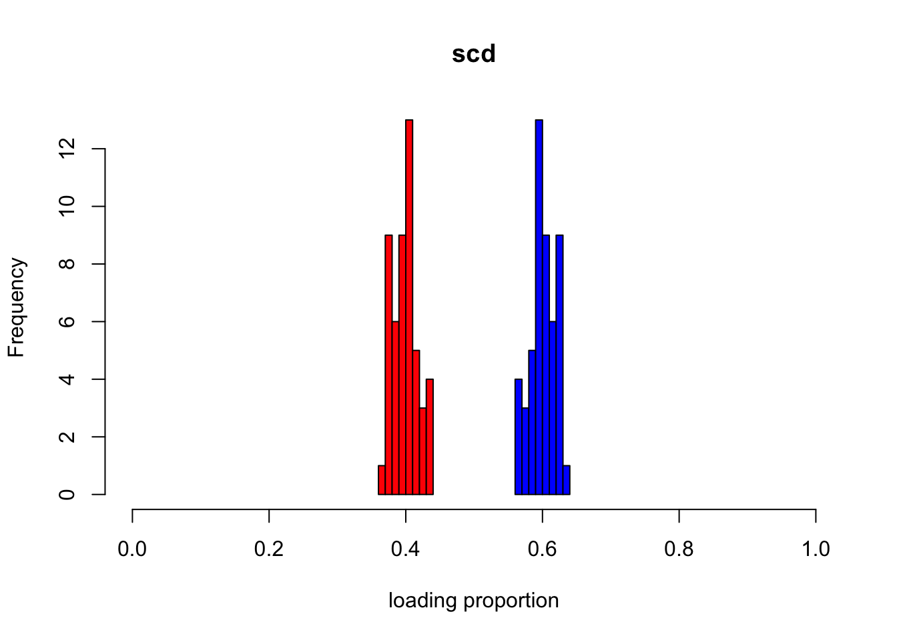
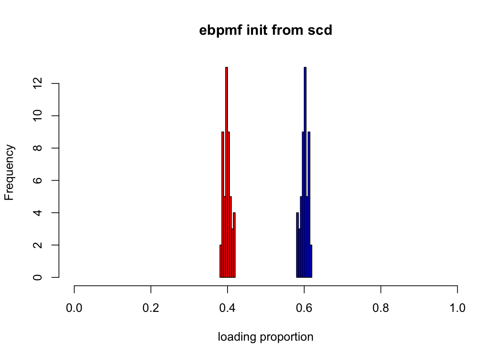
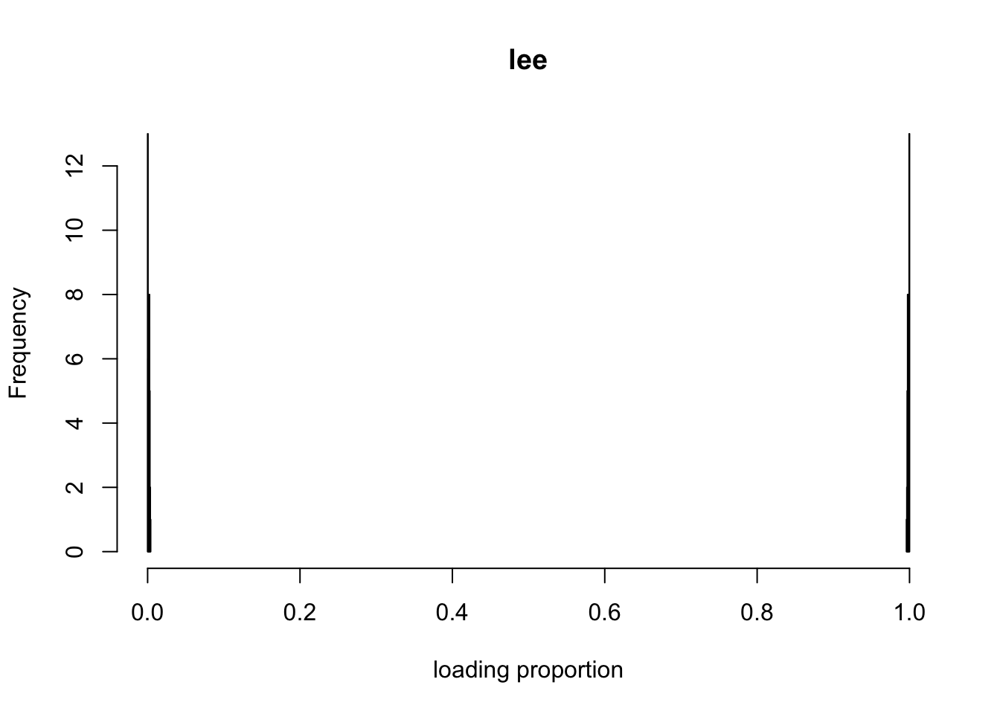
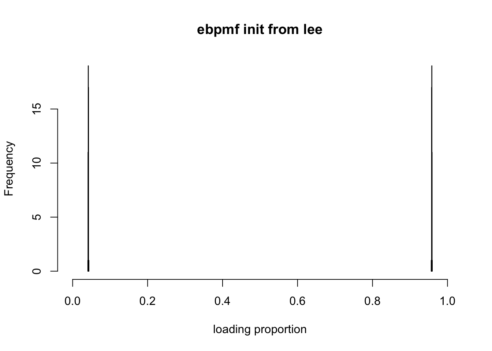

Last updated: 2019-10-27
Checks: 7 0
Knit directory: ebpmf_demo/
This reproducible R Markdown analysis was created with workflowr (version 1.4.0). The Checks tab describes the reproducibility checks that were applied when the results were created. The Past versions tab lists the development history.
Great! Since the R Markdown file has been committed to the Git repository, you know the exact version of the code that produced these results.
Great job! The global environment was empty. Objects defined in the global environment can affect the analysis in your R Markdown file in unknown ways. For reproduciblity it’s best to always run the code in an empty environment.
The command set.seed(20190923) was run prior to running the code in the R Markdown file. Setting a seed ensures that any results that rely on randomness, e.g. subsampling or permutations, are reproducible.
Great job! Recording the operating system, R version, and package versions is critical for reproducibility.
Nice! There were no cached chunks for this analysis, so you can be confident that you successfully produced the results during this run.
Great job! Using relative paths to the files within your workflowr project makes it easier to run your code on other machines.
Great! You are using Git for version control. Tracking code development and connecting the code version to the results is critical for reproducibility. The version displayed above was the version of the Git repository at the time these results were generated.
Note that you need to be careful to ensure that all relevant files for the analysis have been committed to Git prior to generating the results (you can use wflow_publish or wflow_git_commit). workflowr only checks the R Markdown file, but you know if there are other scripts or data files that it depends on. Below is the status of the Git repository when the results were generated:
Ignored files:
Ignored: .Rhistory
Ignored: .Rproj.user/
Untracked files:
Untracked: analysis/.ipynb_checkpoints/
Untracked: analysis/ebpmf_demo.Rmd
Untracked: analysis/ebpmf_rank1_demo2.Rmd
Untracked: analysis/softmax_experiments.ipynb
Untracked: data/Compare_ebpmf_nmf2_out
Untracked: data/Compare_ebpmf_nmf2_out_ver2.Rds
Untracked: data/trash/
Untracked: docs/figure/Experiment_ebpmf.Rmd/
Untracked: verbose_log_1571583163.21966.txt
Untracked: verbose_log_1571583324.71036.txt
Untracked: verbose_log_1571583741.94199.txt
Untracked: verbose_log_1571588102.40356.txt
Unstaged changes:
Modified: analysis/Compare_ebpmf_nmf.Rmd
Modified: analysis/Compare_ebvaepm_ebpm.Rmd
Modified: analysis/softmax_experiments.Rmd
Modified: data/Compare_ebpmf_nmf2_out.Rds
Note that any generated files, e.g. HTML, png, CSS, etc., are not included in this status report because it is ok for generated content to have uncommitted changes.
These are the previous versions of the R Markdown and HTML files. If you’ve configured a remote Git repository (see ?wflow_git_remote), click on the hyperlinks in the table below to view them.
| File | Version | Author | Date | Message |
|---|---|---|---|---|
| Rmd | 21e33d3 | zihao12 | 2019-10-27 | update Experiment_ebpmf_rank1.Rmd |
| html | 5f6927c | zihao12 | 2019-10-26 | Build site. |
| Rmd | 3de00de | zihao12 | 2019-10-26 | update Experiment_ebpmf_rank1.Rmd |
| html | 1d566e4 | zihao12 | 2019-10-26 | Build site. |
| Rmd | f54439f | zihao12 | 2019-10-26 | Experiment_ebpmf_rank1 |
I fit ebpmf_point_gamma on rank-1 dataset with \(K = 2\), and see if we are able to the true \(K\) from the result.
From the Comparison between scd and lee, I think the result would be very different if we initialize the algortihm with scd or lee (from NNLM::nnmf). Also, it would be helpful to see how our algorithm changes from the initialization.
Data generating model: here the mean structure is rank-1. \[
\begin{align}
& \Lambda_{ij} = l f_j\\
& X_{ij} \sim Pois(\Lambda_{ij})
\end{align}
\] There are two scenarios:
* \(l^1 \approx l, l^2 \approx 0\).
* \(l^1 \approx cl, l^2 \approx (1-c)l\).
We prefer the first one for our application.
ebpmf is influenced a lot by the initialization. It is not surprising as the initialization heavily affects how we partition \(X_{ij} = \sum_k Z_{ijk}\).ebpmf seems to be turning the first scenario to the second scenario gradually (compare lee and ebpmf initialized from lee). This is because the initialization makes \(\sum_j Z_{ijk} > 0\), so \(\pi_0^{k} == 0\) for all \(g_k\). So bascially we are fitting \(gamma\) prior family instead of a point gamma. So we might want a sparse initialization.rm(list = ls())
devtools::load_all("../ebpmf")Warning: 1 components of `...` were not used.
We detected these problematic arguments:
* `action`
Did you misspecify an argument?Loading ebpmfWarning: package 'testthat' was built under R version 3.5.2library(ebpmf)sim_pois_rank1 <- function(n, p, seed = 123){
set.seed(seed)
L = matrix(replicate(n, 1), ncol = 1)
F = matrix(sample(seq(1,1000,length.out = p)), ncol = 1)
Lam = L %*% t(F)
X = matrix(rpois(n*p, Lam), nrow = n)
Y = matrix(rpois(n*p, Lam), nrow = n)
ll_train = sum(dpois(X, Lam, log = T))
ll_val = sum(dpois(Y, Lam, log = T))
return(list(X = X, Y = Y, L = L, F = F, Lam = Lam, ll_train = ll_train, ll_val = ll_val))
}
# Scale each column of A so that the entries in each column sum to 1;
# i.e., colSums(scale.cols(A)) should return a vector of ones.
scale.cols <- function (A)
apply(A,2,function (x) x/sum(x))
# Convert the parameters (factors & loadings) for the Poisson model to
# the factors and loadings for the multinomial model. The return value
# "s" gives the Poisson rates for generating the "document" sizes.
poisson2multinom <- function (F, L) {
L <- t(t(L) * colSums(F))
s <- rowSums(L)
L <- L / s
F <- scale.cols(F)
return(list(F = F,L = L,s = s))
}
show_loadings <- function(L, title = "hist for two loadings"){
L_df = data.frame(L)
colnames(L_df) = c("loading1", "loading2")
hist(L_df$loading1, col = "red", xlim=c(0, 1), xlab = "loading proportion", main = title)
hist(L_df$loading2, col = "blue", add = T)
}Simulate data
n = 50
p = 100
sim = sim_pois_rank1(n, p)ebpmf initialized from nnmf using lee and scdK = 2
init_lee = NNLM::nnmf(A = sim$X, k = K, loss = "mkl", method = "lee", max.iter = 1000)
init_scd = NNLM::nnmf(A = sim$X, k = K, loss = "mkl", method = "scd", max.iter = 1000)
## ebpmf_point_gamma init with lee
fit_init_lee = ebpmf::ebpmf_point_gamma(sim$X, K = K, maxiter.out = 100,
qg = initialize_qg_from_LF(L0 = init_lee$W, F0 = t(init_lee$H)))
fit_init_scd = ebpmf::ebpmf_point_gamma(sim$X, K = K, maxiter.out = 100,
qg = initialize_qg_from_LF(L0 = init_scd$W, F0 = t(init_scd$H)))Let’s see how the loadings change for ebpmf initialized with scd
p2m_res = poisson2multinom(F = t(init_scd$H), L = init_scd$W)
show_loadings(p2m_res$L, title = "scd")
| Version | Author | Date |
|---|---|---|
| 1d566e4 | zihao12 | 2019-10-26 |
p2m_res = poisson2multinom(F = fit_init_scd$qg$qfs_mean, L = fit_init_scd$qg$qls_mean)
show_loadings(p2m_res$L, title = "ebpmf init from scd")
| Version | Author | Date |
|---|---|---|
| 1d566e4 | zihao12 | 2019-10-26 |
Let’s see how the loadings change for ebpmf initialized with scd
p2m_res = poisson2multinom(F = t(init_lee$H), L = init_lee$W)
show_loadings(p2m_res$L, title = "lee")
| Version | Author | Date |
|---|---|---|
| 1d566e4 | zihao12 | 2019-10-26 |
p2m_res = poisson2multinom(F = fit_init_lee$qg$qfs_mean, L = fit_init_lee$qg$qls_mean)
show_loadings(p2m_res$L, title = "ebpmf init from lee")
| Version | Author | Date |
|---|---|---|
| 1d566e4 | zihao12 | 2019-10-26 |
Note that ebpmf is turning the first scenario to the second!! Why is that?
gl for ebpmf_init_lee:
print(fit_init_lee$qg$gls[[1]])$pi
[1] 0
$a
[1] 4342.055
$b
[1] 5.950945print(fit_init_lee$qg$gls[[2]])$pi
[1] 0
$a
[1] 3167.436
$b
[1] 2416.518So \(l^2 \approx 0\) is only because it is relatively small compared to \(l^1\), not because \(\pi_0 \approx 1\) ! That the \(\pi_0 = 0\) is because when \(\sum_j Z_{ijk} \neq 0\), the MLE gives us \(\pi_0 = 0\). \ Note: in nnmf a small number is added to \(L, F\) after each iteration for numerical stability, but this will make it impossible to get \(\pi^k_0 = 0\) for any \(l^k\).
## ebpmf_point_gamma init with lee
fit_init_lee$ELBO[length(fit_init_lee$ELBO)][1] 13543202## ebpmf_point_gamma init with scd
fit_init_scd$ELBO[length(fit_init_scd$ELBO)][1] 13542999
sessionInfo()R version 3.5.1 (2018-07-02)
Platform: x86_64-apple-darwin15.6.0 (64-bit)
Running under: macOS 10.14
Matrix products: default
BLAS: /Library/Frameworks/R.framework/Versions/3.5/Resources/lib/libRblas.0.dylib
LAPACK: /Library/Frameworks/R.framework/Versions/3.5/Resources/lib/libRlapack.dylib
locale:
[1] en_US.UTF-8/en_US.UTF-8/en_US.UTF-8/C/en_US.UTF-8/en_US.UTF-8
attached base packages:
[1] stats graphics grDevices utils datasets methods base
other attached packages:
[1] ebpmf_0.1.0 testthat_2.2.1
loaded via a namespace (and not attached):
[1] Rcpp_1.0.2 compiler_3.5.1 git2r_0.25.2
[4] workflowr_1.4.0 prettyunits_1.0.2 remotes_2.1.0
[7] tools_3.5.1 digest_0.6.22 pkgbuild_1.0.3
[10] pkgload_1.0.2 evaluate_0.14 memoise_1.1.0
[13] rlang_0.4.0 cli_1.1.0 rstudioapi_0.10
[16] yaml_2.2.0 xfun_0.8 withr_2.1.2
[19] stringr_1.4.0 knitr_1.25 gtools_3.8.1
[22] desc_1.2.0 fs_1.3.1 devtools_2.2.1.9000
[25] rprojroot_1.3-2 glue_1.3.1 R6_2.4.0
[28] processx_3.3.1 rmarkdown_1.13 sessioninfo_1.1.1
[31] mixsqp_0.1-121 callr_3.2.0 magrittr_1.5
[34] whisker_0.3-2 backports_1.1.5 ps_1.3.0
[37] ellipsis_0.3.0 htmltools_0.3.6 usethis_1.5.1
[40] assertthat_0.2.1 stringi_1.4.3 ebpm_0.0.0.9001
[43] NNLM_0.4.2 crayon_1.3.4